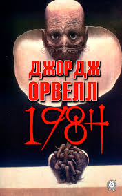
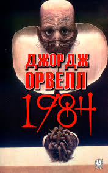

Читання книг приносить мені велике задоволення. Це дає можливість зануритися в нові світи, дізнатися багато цікавого та розвивати свою уяву.

 

Ви можете придбати ці книги на Yakaboo
Ви можете придбати ці книги на Видавництво "А-БА-БА-ГА-ЛА-МА-ГА
Ви можете придбати ці книги на Книгарня Є| Назва книги | Автор | Жанр |
|---|---|---|
| Володар перснів | Дж. Р. Р.Толкін | Фентезі |
| Гаррі Потер і філософський камінь | Дж. К. Ролінг | Фентезі |
| 1984 | Джордж Оверлл | Наукова фантастика |